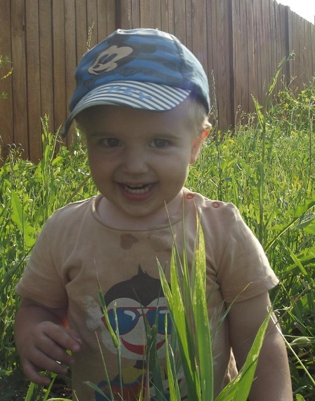

Обо мне
Меня зовут Илья, мне очень трудно дался текст, но я старался.У меня есть жена, и сын (он на фотографии). Обучался в ИИФиРЭ по специальности "радиотехника" бросил на 5 курсе. Сейчас работаю Backend разработчиком в компании по разработке сайтов, из последних достижений:
Обновил все сайты компании до актуальной версии PHP.
Провел рефакторинг имеющейся cистемы управления сайтом и ввел ORM.
